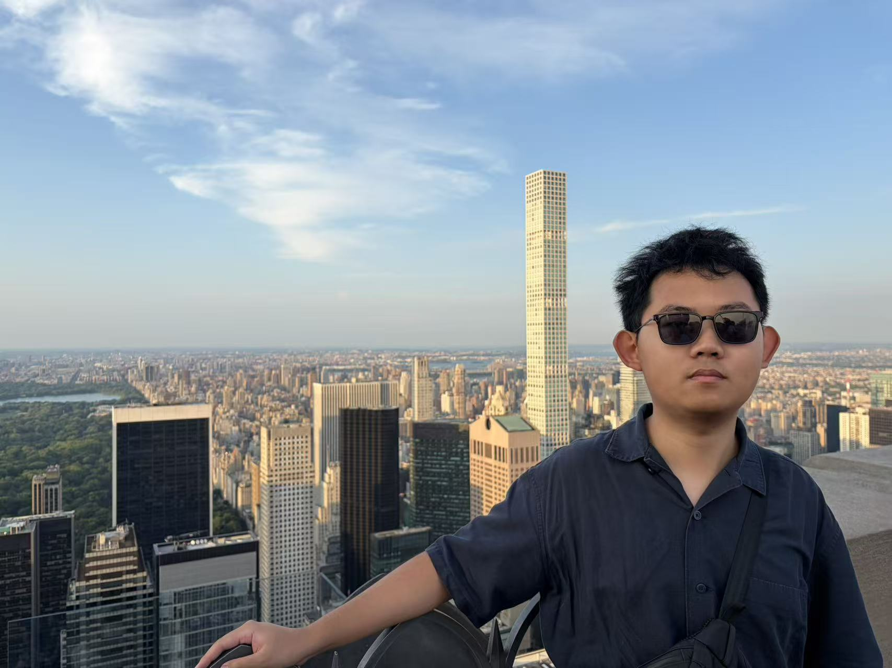

Hello! I am an undergraduate student in Robotics Engineering at Chongqing University, expecting to graduate in 2027.
Since July 2026, I have been an onsite visiting undergraduate researcher with Prof. Haimin Hu at Johns Hopkins University's Alliance AI Lab and the Laboratory for Computational Sensing and Robotics (LCSR). Previously, I worked on humanoid motion imitation and robotic grasping at Chongqing University.
My research interests focus on robot learning and safe reinforcement learning. I am particularly interested in learning capable robot policies that remain safe and robust when transferred to real-world systems.

news
Joined the Alliance AI Lab at Johns Hopkins University as an onsite visiting undergraduate researcher.
Won a division championship at the VEX U World Championship with Chongqing University's robotics team.
selected research
SAFE RL
GPU-Accelerated Human-Centered Safety Filtering for Autonomous Racing
Johns Hopkins University · Alliance AI Lab · 2026–present
GPU-parallel policy training, cross-simulator transfer, and safety filtering for autonomous racing.